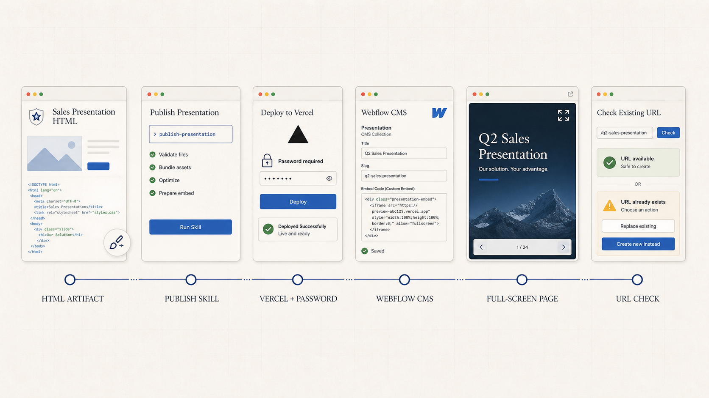

Bringing a community site to life.
Reworked around community life: clearer parish information, living bulletins and events, and educational stories brought to life through interaction.
I build websites, product stories, AI-enabled workflows, and fun AI experiments.
Reworked around community life: clearer parish information, living bulletins and events, and educational stories brought to life through interaction.

From no web presence to a lead magnet: a useful website, local tools, and a programmatic search system built to turn nearby demand into bookings.
A proposal system that turns local business data into tailored media plans, maps, and campaign creative.


A product story that educates buyers about a misunderstood advertising medium: where it reaches people, why attention is different, and when it works.
Two AI-assisted music releases built around the language, places, and culture of digital out-of-home advertising.

I trust work you can open, test, send, publish, and measure.
The repeatable systems behind the work.

Research and search data move through human-guided writing and review to published content and measurable performance.
View workflow
A queryable client-delivery workspace connecting performance data, content operations, reporting, and opportunities.

A publish skill deploys branded HTML presentations to Vercel, applies access control, embeds them in Webflow, and verifies the final URL.
View workflow
Google Maps discovery, enrichment, screen matching, and sales handoff in one working system.
View workflow
Research, visual direction, generated assets, human review, and implementation move through one repeatable build path.
View workflowUseful work should change something.
I was born and raised in Toronto. My first look at marketing came at six, helping my dad at his Chrysler dealership. I loved spending weekends there, looking through the brochures and the marketing around the showroom and thinking, “This made the cars look really cool.” That was probably the start of it. I’ve been doing marketing ever since.
Now I live in Coldstream, BC, raising four kids and sharing the house with a cat and a dog. When I should probably be resting, I spend an unreasonable amount of time tinkering with AI and building things simply to see if I can, even when the practical value is questionable.
But there’s always value in learning from the process.
This took shape over two days. The portrait starts with one approved painting rather than a regenerated video. A masked typing loop supplies the hand movement, while 66 registered head poses map the cursor or touch position to changes in gaze.
The difficult part wasn’t making it move. It was keeping the face, clothing, room, and painted texture from moving with it. The lesson was to constrain the AI, isolate only what needed to change, and composite the result back into a stable source.